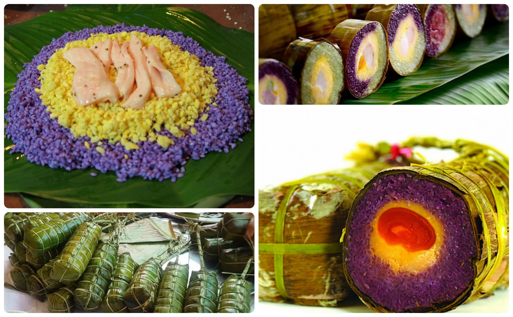
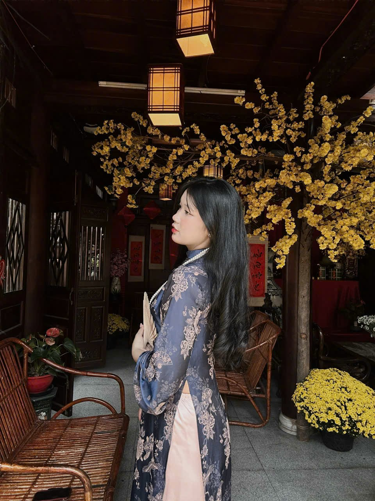
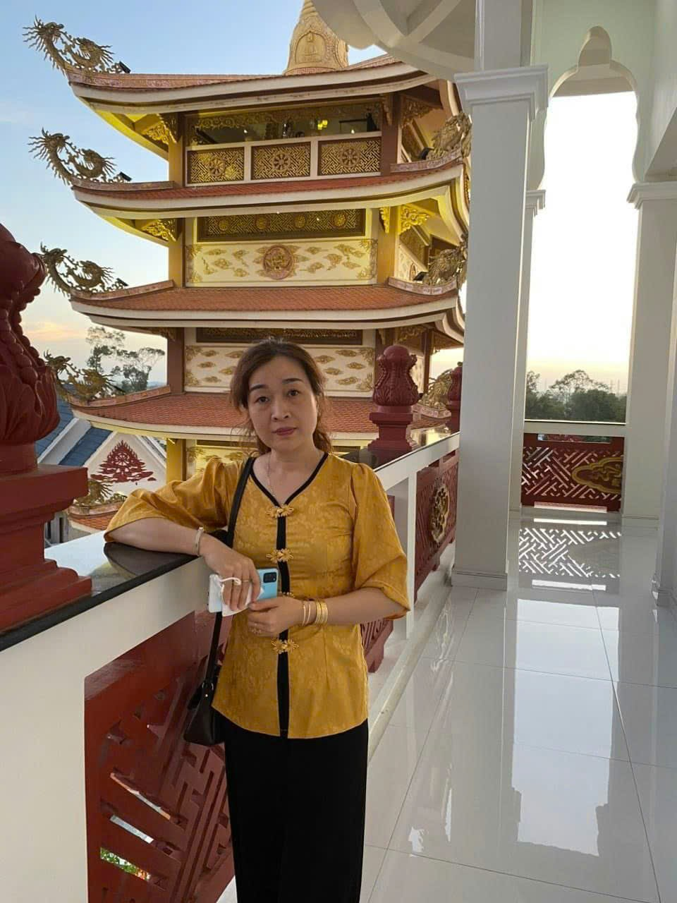
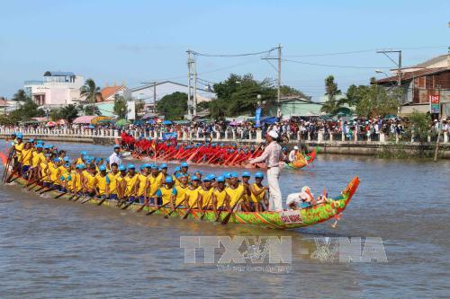
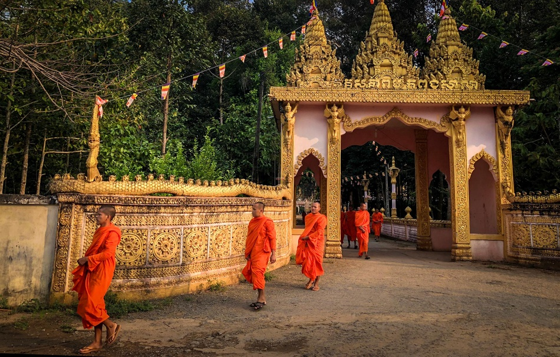

Phong tục – Nghi lễ ngày Tết ở Trà Vinh
Trước Tết🌿
-
Dọn dẹp nhà cửa
Những ngày cuối năm, người dân Trà Vinh tất bật dọn dẹp, lau chùi bàn thờ tổ tiên và trang trí nhà cửa. Nhà nào cũng treo câu đối đỏ, trưng mai vàng hoặc hoa vạn thọ.
-
Gói bánh Tét
Ở Trà Vinh, bánh tét là món không thể thiếu. Cả gia đình quây quần gói bánh, canh nồi bánh suốt đêm. Đây là dịp sum họp và gắn kết tình thân.
 -
Cúng ông Công- ông Táo
Ngày 23 tháng Chạp, người dân làm mâm cúng tiễn Táo quân về trời, cầu mong một năm mới bình an, sung túc.
Trong Tết🎆
-
Cúng Giao Thừa🌃
Đêm giao thừa, mỗi gia đình bày mâm cúng trước nhà để đón năm mới và tiễn năm cũ. Không khí trang nghiêm nhưng ấm áp.
-
Chúc tết - Lì xì🧧
Sáng mùng Một, con cháu chúc Tết ông bà, cha mẹ. Người lớn lì xì cho trẻ nhỏ như lời chúc may mắn đầu năm.
 -
Đi viếng chùa🏯
Trà Vinh có nhiều ngôi chùa Khmer nổi tiếng. Dịp Tết, người dân đến chùa cầu an, xin lộc đầu năm và nghe tụng kinh đầu xuân.
 Sau Tết🌸
-
Hóa vàng
Sau mùng Ba hoặc mùng Bốn, các gia đình làm lễ hóa vàng tiễn ông bà tổ tiên về cõi âm.
-
Lễ hội đầu xuân
Ở Trà Vinh, ngoài Tết Nguyên Đán, người dân còn có các lễ hội truyền thống đặc sắc của đồng bào Khmer như lễ hội tại chùa, tạo nên nét giao thoa văn hóa độc đáo.

✨ Nét riêng của Tết Trà Vinh
Điều đặc biệt ở Trà Vinh là sự giao thoa giữa văn hóa Kinh – Khmer. Bên cạnh các phong tục Tết truyền thống của người Việt, người dân còn gìn giữ những nghi lễ mang đậm bản sắc Khmer. Chính sự hòa quyện này tạo nên không khí Tết đa sắc màu, vừa trang nghiêm vừa rộn ràng.
